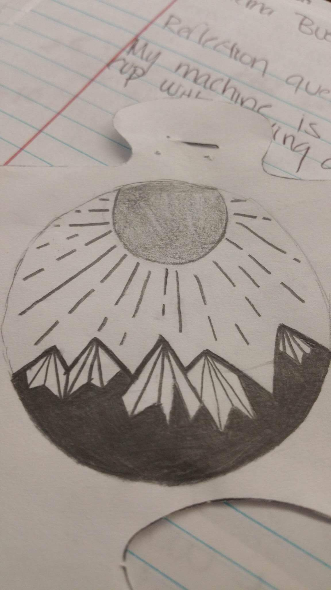
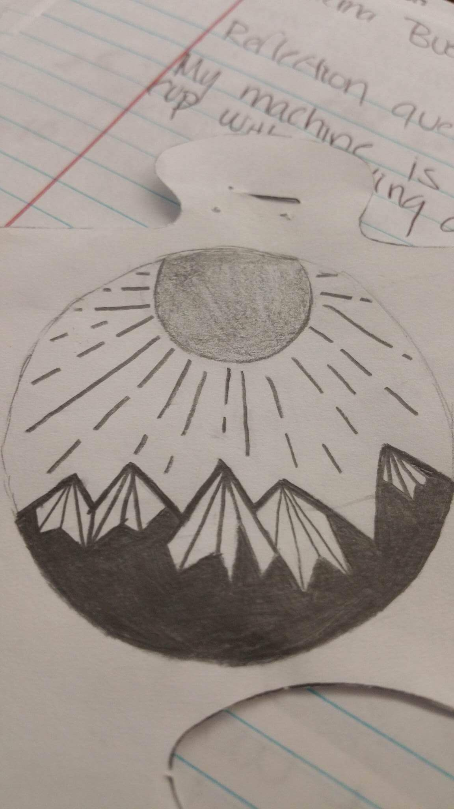

Art
pictures
drawings
My topic is important because it's showing art of another student and how talented and creative they are. It shows how students can get creative with art or anything else if they just put their mind to it. This particular student didn't think she/he can do well in art and be able to draw anything but as you can see in the website she/he could because that's what she/he put their focused on. Know that she/he knows they can draw she/he wants to study to become an Artistic. Hopefully this website interests to draw or anything related to art. The website I made is so people can post their art work they've done on the internet, so all their hard work can be shown off and to be confident about the work they've done. It's also to show how many talented and creative students we have in ALHS and that the art class her helped students find a talent they didn't know they had. ALHS art classes are really fun and a place you can be creative. If you're interested in do anything related to art you should try out an art classes. Also you need an art classes to graduate so i consider you to join and be creative. So far i've only had one student from ALHS art class send me pictures of her/hes art work. I'm looking forward for other students to show me their talent in art and to be shown in this website. I know there's many talented students in ALHS so don't be afraid to have your artwork be shown off and for people to see how creative you are. Send me pictures of your artwork today. My target is students that are interested to show off their artwork and to have students get interested to do artwork. So that their work and talent can be shown off to ALHS and so people can see how creative these students are. I know there's a lot of students that are creative and talented in ALHS and I just want to show off their work on this website. Hope you enjoy the website. Art the expression or application of human creative skill and imagination, typically in a visual form such as painting or sculpture, producing works to be appreciated primarily for their beauty or emotional power. Art can show how people are feeling and can mean a lot of things based on the drawings they do. Art is really good way to express your emotions towards people, art is really important in this world because it shows different types of meanings of what's going on in this world. People can paint, draw without having to write about how how they feel.